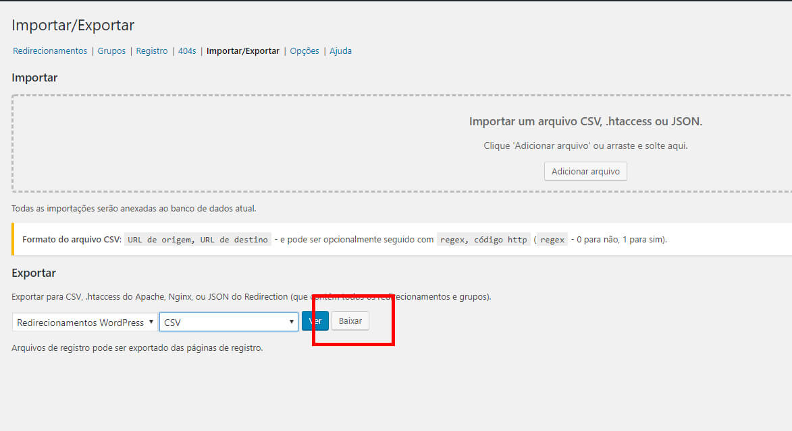
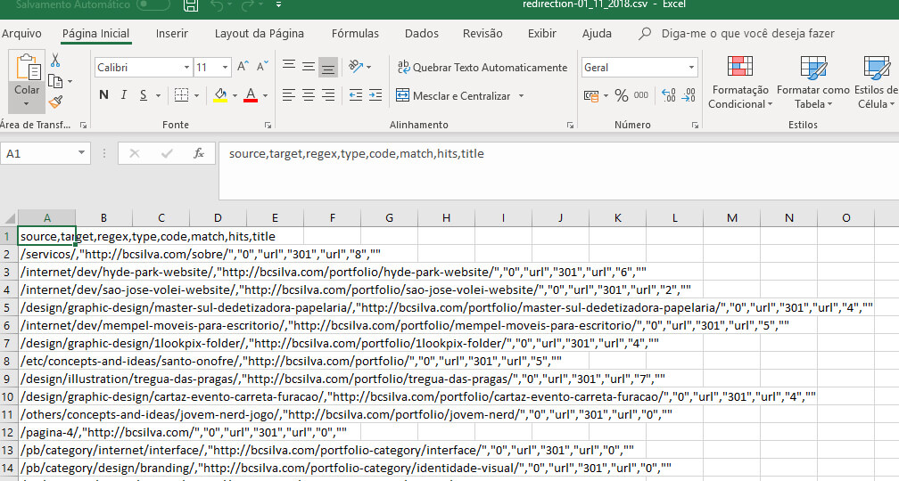
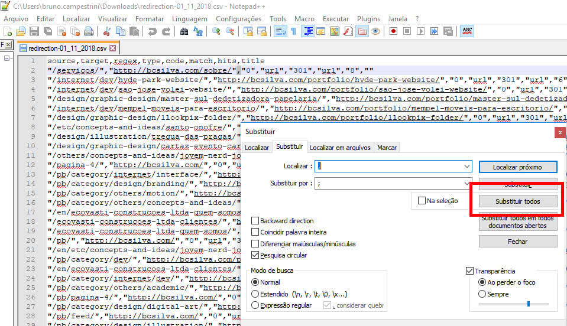
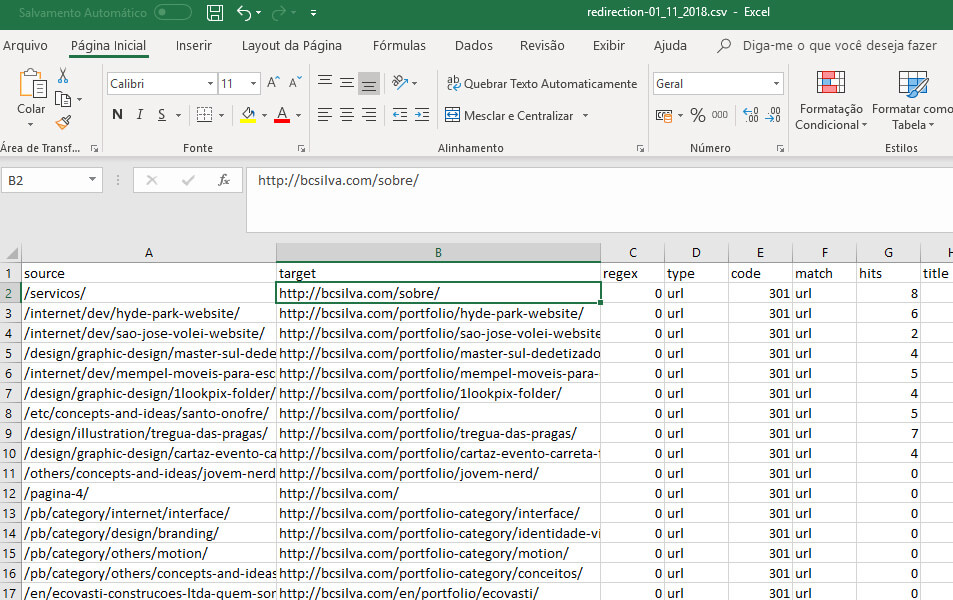
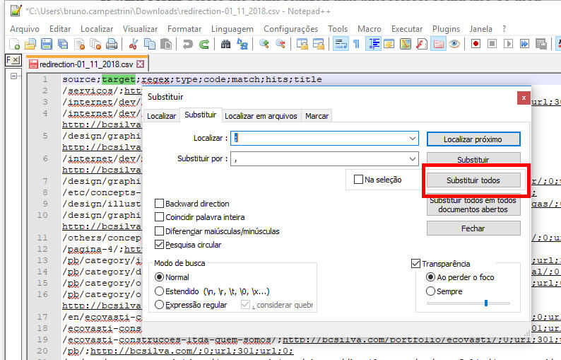
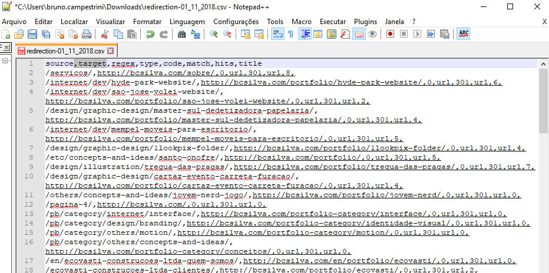
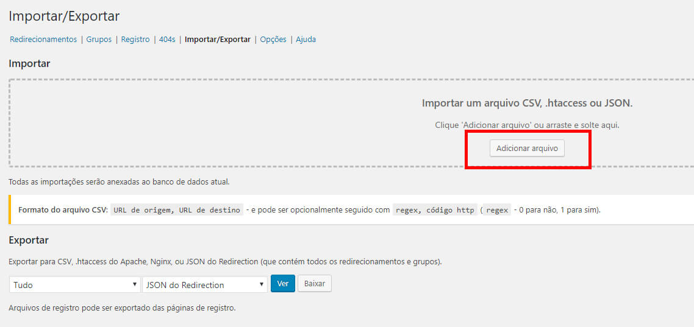

Para isso, comecei a usar o plugin Redirection, do WordPress. Este plugin permite você fazer redirecionamentos de urls antigas sem a necessidade de usar o arquivo .htaccess, mas sim direto no painel do CMS.
O problema é que se você opta por fazer á mão, terá que fazer os redirecionamentos, um por um, usando os campos De/para, tipo de redirecionamento, etc. Isso te consumirá um bom tempo.
O plugin oferece também a opção de importar múltiplos redirecionamentos de uma vez, por arquivo .htaccess, planilha CSV e outros. A planilha CSV foi a melhor opção para mim.

Entretanto, o modelo de planilha oferecido pelo programa, ao clicarmos em exportar pra CSV pra depois substituirmos com nossos dados, não é o mais adequado por separar as colunas por “vírgulas” ao invés de “ponto e vírgula”.

Levou um tempo para eu me tocar nisso, mas consegui resolver o problema abrindo o CSV num editor de código/texto e substituindo as vírgulas por ponto e vírgulas.

Resolvendo esse probleminha, o Excel conseguiu reconhecer as colunas do CSV e assim inserir e alterar os dados.

Só que para o plugin do Redirection conhecer, tive que voltar as vírgulas novamente, substituindo-as pelo editor de código. Só assim que o importador dele aceita, acabou dando certo.



Enfim, espero que corrijam esse issue nas próximas versões, e fica a dica 😉